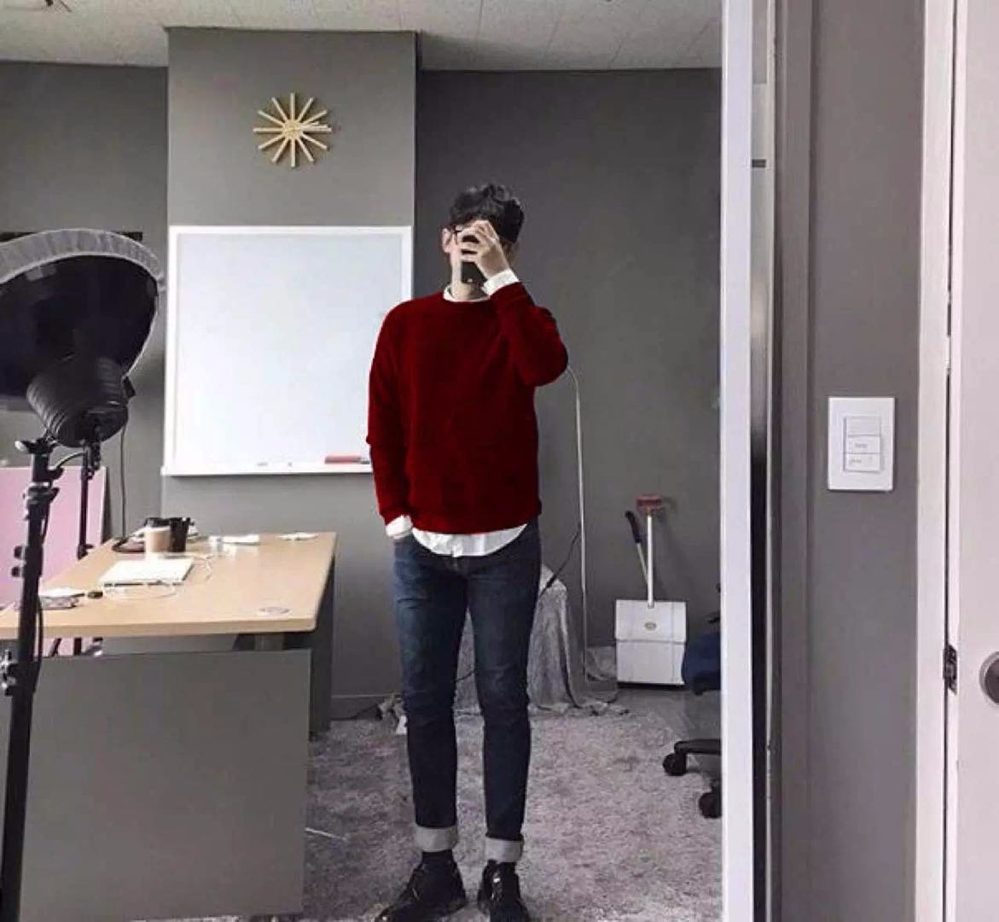
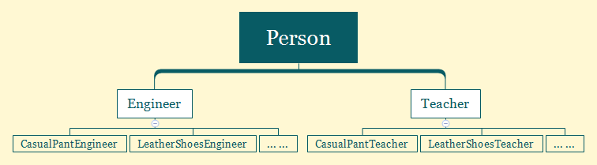
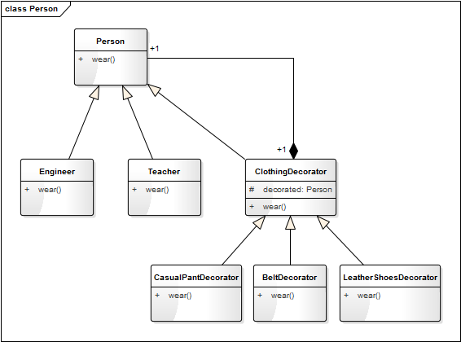

- 00 生活中的设计模式：启程之前，请不要错过我.md.html
- 01 监听模式：坑爹的热水器.md.html
- 02 适配模式：身高不够鞋来凑.md.html
- 03 状态模式：人与水的三态.md.html
- 04 单例模式：你是我生命的唯一.md.html
- 05 职责模式：我的假条去哪了.md.html
- 06 中介模式：找房子问中介.md.html
- 07 代理模式：帮我拿一下快递.md.html
- 08 装饰模式：你想怎么穿就怎么穿.md.html
- 09 工厂模式：你要拿铁还是摩卡.md.html
- 10 迭代模式：下一个就是你了.md.html
- 11 组合模式：自己组装电脑.md.html
- 12 构建模式：想要车还是庄园.md.html
- 13 克隆模式：给你一个分身术.md.html
- 14 策略模式：怎么来不重要，人到就行.md.html
- 15 命令模式：大闸蟹，走起！.md.html
- 16 备忘模式：好记性不如烂笔头.md.html
- 17 享元模式：颜料很贵必须充分利用.md.html
- 18 外观模式：学妹别慌，学长帮你.md.html
- 19 访问模式：一千个读者一千个哈姆雷特.md.html
- 20 生活中的设计模式：与经典设计模式的不解渊源.md.html
- 21 生活中的设计模式：那些未完待续的设计模式.md.html
- 22 深入解读过滤器模式：制作一杯鲜纯细腻的豆浆.md.html
- 23 深入解读对象池技术：共享让生活更便捷.md.html
- 24 深入解读回调机制：把你技能亮出来.md.html
- 25 谈谈我对设计模式的理解.md.html
- 26 谈谈我对设计原则的思考.md.html
- 27 谈谈我对项目重构的看法.md.html
08 装饰模式：你想怎么穿就怎么穿
故事剧情
工作两年后，Tony 因为换工作而搬了一次家！这是一个4室1厅1卫1厨的户型，住了4户人家。恰巧这里住的都是年轻人，有男孩也有女孩，而 Tony 就是在这里遇上了自己喜欢的人，她叫 Jenny。Tony 和 Jenny 每天都低头不见抬头见，但 Tony 是一个程序猿，天生不善言辞、不懂着装，老被 Jenny 嫌弃：满脸猥琐，一副屌丝样！
被嫌弃后，Tony 痛定思痛：一定要改善一下自己的形象，摆脱屌丝样！于是叫上自己的死党 Henry 去了五彩城……
Tony 在这个大商城中兜兜转转，被各个商家教化着该怎样搭配衣服：衬衫要套在腰带里面，风衣不要系纽扣，领子要立起来……
在反复试穿了一个晚上的衣服之后，终于找到一套还算凑合的行装：下面是一条卡其色休闲裤配一双深色休闲皮鞋，加一条银色针扣头的黑色腰带；上面是一件紫红色针织毛衣，内套一件白色衬衫；头上带一副方形黑框眼镜。整体行装虽不潮流，却透露出一种工作人士的成熟、稳健和大气！

（图片来自网络）
用程序来模拟生活
Tony 是一个程序员，给自己搭配了一套着装：一条卡其色休闲裤、一双深色休闲皮鞋、一条银色针扣头的黑色腰带、一件紫红色针织毛衣、一件白色衬衫、一副方形黑框眼镜。但类似的着装也可以穿在其他的人身上，比如一个老师也可以这样穿：一双深色休闲皮鞋、一件白色衬衫、一副方形黑框眼镜。
我们就用程序来模拟这样一个情景。
源码示例：
class Person:
"人"
def __init__(self, name):
self.__name = name
def getName(self):
return self.__name
def wear(self):
print("我的着装是：")
class Engineer(Person):
"工程师"
def __init__(self, name, skill):
super().__init__(name)
self.__skill = skill
def getSkill(self):
return self.__skill
def wear(self):
print("我是" + self.getSkill() + "工程师" + self.getName())
super().wear()
class Teacher(Person):
"教师"
def __init__(self, name, title):
super().__init__(name)
self.__title = title
def getTitle(self):
return self.__title
def wear(self):
print("我是" + self.getName() + self.getTitle())
super().wear()
class ClothingDecorator(Person):
"服装装饰器"
def __init__(self, person):
self._decorated = person
def wear(self):
self._decorated.wear()
class CasualPantDecorator(ClothingDecorator):
"休闲裤"
def __init__(self, person):
super().__init__(person)
def wear(self):
super().wear()
print("一条卡其色休闲裤")
class BeltDecorator(ClothingDecorator):
"腰带"
def __init__(self, person):
super().__init__(person)
def wear(self):
super().wear()
print("一条银色针扣头的黑色腰带")
class LeatherShoesDecorator(ClothingDecorator):
"皮鞋"
def __init__(self, person):
super().__init__(person)
def wear(self):
super().wear()
print("一双深色休闲皮鞋")
class KnittedSweaterDecorator(ClothingDecorator):
"针织毛衣"
def __init__(self, person):
super().__init__(person)
def wear(self):
super().wear()
print("一件紫红色针织毛衣")
class WhiteShirtDecorator(ClothingDecorator):
"白色衬衫"
def __init__(self, person):
super().__init__(person)
def wear(self):
super().wear()
print("一件白色衬衫")
class GlassesDecorator(ClothingDecorator):
"眼镜"
def __init__(self, person):
super().__init__(person)
def wear(self):
super().wear()
print("一副方形黑框眼镜")
测试代码：
def testDecorator():
tony = Engineer("Tony", "客户端")
pant = CasualPantDecorator(tony)
belt = BeltDecorator(pant)
shoes = LeatherShoesDecorator(belt)
shirt = WhiteShirtDecorator(shoes)
sweater = KnittedSweaterDecorator(shirt)
glasses = GlassesDecorator(sweater)
glasses.wear()
print()
decorateTeacher = GlassesDecorator(WhiteShirtDecorator(LeatherShoesDecorator(Teacher("wells", "教授"))))
decorateTeacher.wear()
上面的测试代码中：
decorateTeacher = GlassesDecorator(WhiteShirtDecorator(LeatherShoesDecorator(Teacher("wells", "教授"))))
这个写法，大家不要觉得奇怪，它其实就是将多个对象的创建过程合在了一起，其实是一种优雅的写法（是不是少了好几行代码？）。创建的 Teacher 对象又通过参数传给 LeatherShoesDecorator 的构造函数，而创建的 LeatherShoesDecorator 对象又通过参数传给 WhiteShirtDecorator 的构造函数，以此类推……
输出结果：
我是客户端工程师Tony
我的着装是：
一条卡其色休闲裤
一条银色针扣头的黑色腰带
一双深色休闲皮鞋
一件白色衬衫
一件紫红色针织毛衣
一副方形黑框眼镜
我是wells教授
我的着装是：
一双深色休闲皮鞋
一件白色衬衫
一副方形黑框眼镜
从剧情中思考装饰模式
上面的示例中，Tony 为了改善自己的形象，整体换了个着装，改变了自己的气质，使自己看起来不再是那么猥琐的屌丝样。俗话说一个人帅不帅，得看三分长相七分打扮。同一个人，不一样的着装，给人一种完全不一样的感觉。我们可以任意搭配不同的衣服、围巾、裤子、鞋子、眼镜、帽子以达到不同的效果。不同的搭配，形成不同的风格，透露不同的气质。在这个追求个性与自由的时代，穿着的风格可谓是开放到了极致，真是你想怎么穿就怎么穿！如果你是去参加一个正式会议或演讲，可以穿一套标配西服；如果你是去大草原，想骑着骏马驰骋天地，便该穿上一套马服马裤马鞋；如果你是漫迷，去参加动漫节，亦可穿上 Cosplay 的衣服，让自己成为那个内心向往的主角；如果你是……
这样一个时时刻刻发现在我们生活中的着装问题，就是程序中装饰模式的典型样例。
装饰模式
装饰模式（Decorator Pattern）：动态地给一个对象增加一些额外的职责（Responsibility），就增加对象功能来说，装饰模式比生成子类实现更为灵活。
就故事中这个示例来说，由结构庞大的子类继承关系转换成了结构紧凑的装饰关系：

继承关系：

装饰关系
装饰模式的特点
- 可灵活地给一个对象增加职责或拓展功能
如上面的示例中，可任意地穿上自己想穿的衣服。不管穿上什么衣服，你还是那个你，但穿上不同的衣服你就会有不同的外表。
- 可增加任意多个装饰
你可以只穿一件衣服，也可以只穿一条裤子，也可以衣服和裤子各种搭配的穿，全随你意！
- 装饰的顺序不同，可能产生不同的效果
在上面的示例中，Tony 是针织毛衣穿在外面，白色衬衫穿在里面。当然，如果你愿意（或因为怕冷），也可以针织毛衣穿在里面，白色衬衫穿在外面。但两种着装穿出来的效果，给人的感觉肯定是完全不一样的，自己脑补一下，哈哈！
使用装饰模式的方式，想要改变装饰的顺序，也是非常简单的。只要把测试代码稍微改动一下即可，如下：
def testDecorator2():
tony = Engineer("Tony", "客户端")
pant = CasualPantDecorator(tony)
belt = BeltDecorator(pant)
shoes = LeatherShoesDecorator(belt)
sweater = KnittedSweaterDecorator(shoes)
shirt = WhiteShirtDecorator(sweater)
glasses = GlassesDecorator(shirt)
glasses.wear()
结果如下：
我是客户端工程师Tony
我的着装是：
一条卡其色休闲裤
一条银色针扣头的黑色腰带
一双深色休闲皮鞋
一件紫红色针织毛衣
一件白色衬衫
一副方形黑框眼镜
装饰模式的模型抽象
类图
通过上面的示例代码，我们知道了装饰模式的一个典型实现。我们再将其抽象成一个一般化的类图结构，如下：

上图中的 Component 是一个抽象类，代表具有某中功能（function）的组件，ComponentImplA 和 ComponentImplB 分别是其具体的实现子类。Decorator 是 Component 装饰器，里面有一个 Component 的对象 decorated，这就是被装饰的对象，装饰器可为被装饰对象添加额外的功能或行为（addBehavior）。DecoratorImplA 和 DecoratorImplB 分别是两个具体的装饰器（实现子类）。
这样一种模式很好地将装饰器与被装饰的对象进行解耦。
模型说明
装饰模式的优点：
- 使用装饰模式来实现扩展比继承更加灵活，它可以在不需要创造更多子类的情况下，将对象的功能加以扩展。
- 可以动态地给一个对象附加更多的功能。
- 可以用不同的装饰器进行多重装饰，装饰的顺序不同，可能产生不同的效果。
- 装饰类和被装饰类可以独立发展，不会相互耦合；装饰模式相当于是继承的一个替代模式。
装饰模式的缺点：
- 与继承相比，用装饰的方式拓展功能更加容易出错，排错也更困难。对于多次装饰的对象，调试时寻找错误可能需要逐级排查，较为烦琐。
应用场景
- 有大量独立的扩展，为支持每一种组合将产生大量的子类，使得子类数目呈爆炸性增长。
- 需要动态地增加或撤销功能时。
- 不能采用生成子类的方法进行扩充时，如类定义不能用于生成子类。
装饰模式的应用场景非常广泛。如在实际项目开发中经常看到的过滤器，便可用装饰模式的方式去实现。如果你是 Java 程序员，对 IO 中的 FilterInputStream 和 FilterOutputStream 一定不陌生，它的实现其实就是一个装饰模式。FilterInputStream(FilterOutputStream) 就是一个装饰器，而 InputStream(OutputStream) 就是被装饰的对象。
我们看一下创建对象过程：
DataInputStream dataInputStream = new DataInputStream(new FileInputStream("C:/text.txt"));
DataOutputStream dataOutputStream = new DataOutputStream(new FileOutputStream("C:/text.txt"));
这个写法与上面 Demo 中的
decorateTeacher = GlassesDecorator(WhiteShirtDecorator(LeatherShoesDecorator(Teacher("wells", "教授"))))
是不是很相似？都是一个对象套一个对象的方式进行创建。
还有一个场景，如果你对图形图像处理有一定了解，就会知道对图像的处理其实就是对一个二维坐标像素数据的处理，如图像的灰度化、梯度化（锐化）、边缘化、二值化。这些操作顺序不同就会造成不同的效果，也是适合用装饰模式来进行封装。